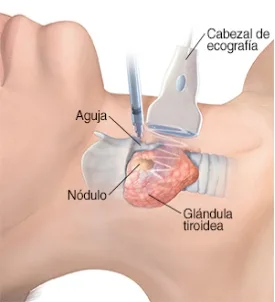

Biopsia por aspiración con aguja fina (BAAF)
Procedimiento mínimamente invasivo utilizado para obtener muestras celulares de órganos o lesiones con fines diagnósticos. Se emplea principalmente en nódulos tiroideos, aunque también puede realizarse en ganglios linfáticos, mama, glándulas salivales y otros órganos.
¿En qué consiste?
Introducir una aguja fina dentro del nódulo o lesión, generalmente guiada por ecografía, para aspirar células que posteriormente se envían al laboratorio para su análisis citológico.
Pasos del procedimiento
- Colocar al paciente en la posición adecuada.
- Limpiar y desinfectar la piel.
- Localizar la lesión mediante palpación o ecografía.
- Introducir la aguja fina.
- Aspirar las células.
- Colocar la muestra en portaobjetos y enviarla al laboratorio.
Antes de la BAAF
Verificar identidad y orden médica; explicar el procedimiento y obtener el consentimiento informado; revisar antecedentes, alergias y medicamentos (especialmente anticoagulantes); valorar signos vitales; preparar el material estéril; colocar al paciente en decúbito supino con ligera extensión del cuello y mantener asepsia y antisepsia.
Durante la BAAF
Brindar apoyo emocional; asistir al médico; mantener el campo estéril; vigilar el estado general; indicar que permanezca inmóvil; identificar y rotular correctamente las muestras y prepararlas para su envío al laboratorio de anatomía patológica.
Después de la BAAF
Aplicar presión y apósito si es necesario; vigilar complicaciones (sangrado, hematoma, dolor intenso, mareo o dificultad respiratoria); controlar signos vitales; informar sobre molestias normales y evitar esfuerzos 24 h; explicar signos de alarma y registrar el procedimiento y la evolución.